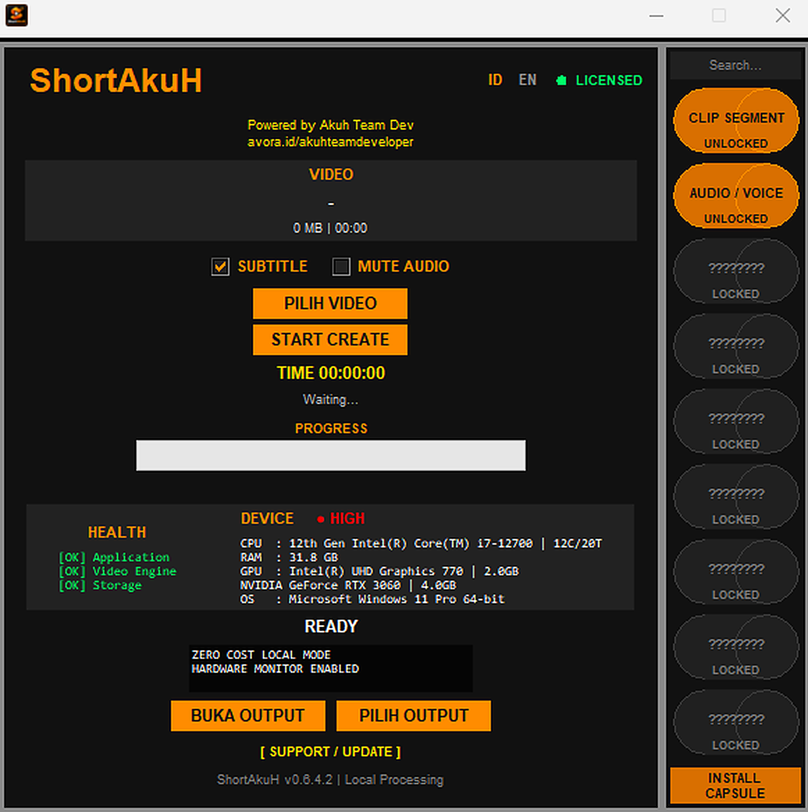

Simple Workflow
Antarmuka desktop untuk membantu mengelola proses pembuatan video secara lebih terstruktur.
Ubah workflow video menjadi lebih sederhana. ShortAkuH membantu Anda membuat video Shorts melalui aplikasi desktop Windows dengan pemrosesan lokal.
Windows desktop · Free download

Tampilan aplikasi ShortAkuH
Fokus pada proses pembuatan video yang praktis, dengan aplikasi desktop dan fitur yang dirancang untuk membantu pekerjaan konten sehari-hari.
Antarmuka desktop untuk membantu mengelola proses pembuatan video secara lebih terstruktur.
Bantu memilih segmen video untuk dijadikan bagian dari workflow Shorts.
Pemrosesan inti dilakukan di komputer Anda, sesuai kemampuan dan konfigurasi perangkat.
Aplikasi Windows yang dapat digunakan tanpa harus menjadikan browser sebagai workspace utama.
Mendukung alur kerja audio yang tersedia pada versi aplikasi yang Anda gunakan.
Dirancang untuk membantu kreator menyiapkan video pendek dengan alur kerja yang praktis.
Mulai dari file video yang Anda miliki dan gunakan workflow ShortAkuH untuk membantu menyiapkan konten pendek.
Siapkan dan pilih file video yang ingin Anda proses di komputer.
Gunakan fitur yang tersedia untuk membantu alur kerja pengolahan video.
Periksa hasil pemrosesan dan siapkan video untuk workflow publikasi Anda.
Unduh ShortAkuH untuk Windows melalui kanal rilis resmi. Periksa informasi versi dan petunjuk instalasi sebelum digunakan.
Informasi singkat sebelum mulai menggunakan ShortAkuH.
Tautan di halaman ini mengarah ke paket unduhan yang saat ini dipublikasikan pada GitHub Releases. Periksa keterangan lisensi dan fitur pada versi tersebut.
Halaman ini ditujukan untuk aplikasi desktop Windows. Periksa dokumentasi rilis untuk persyaratan sistem yang sesuai dengan versi yang Anda unduh.
ShortAkuH dirancang dengan pendekatan local-first untuk pemrosesan inti. Kebutuhan koneksi dan layanan tambahan dapat bergantung pada fitur yang digunakan.
Gunakan kanal GitHub Releases resmi untuk melihat paket dan informasi rilis ShortAkuH terbaru.